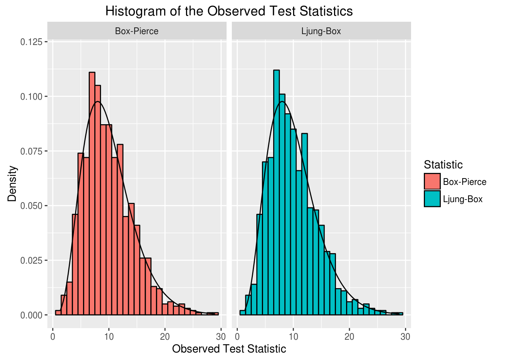
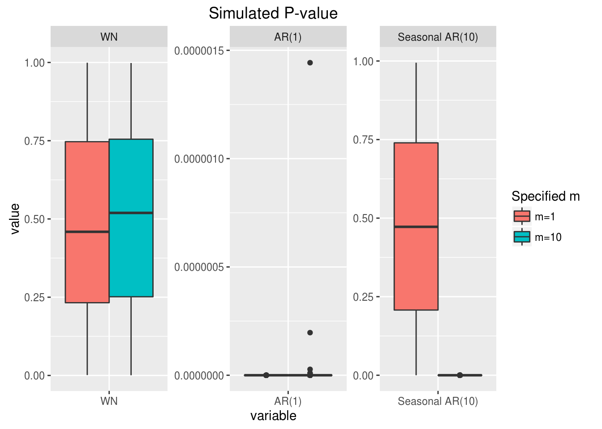

2.5 Portmanteau test
In this section we give a brief introduction to Portmanteau tests used in time series analysis. In linear regression, we always need to do diagnostic test for residuals after building our model, to check whether our assumptions are satisfied. If there is no evidence to reject any of the assumptions, we can say that the linear model we built is adequate. Otherwise, the linear models are not adequate, some modifications or transformations need to be done either for the previous model or for the data. This rule also applies to time series modeling. In time series analysis, a wide variety of Portmanteau tests can be used to check the white noise residuals assumption. We will introduce two of them as follows, which are based on the ACF of residuals, in order to illustrate some of ideas of this kind of tests.
Dating back to 1970, Box and Pierce proposed the well-known Box-Pierce test statistic as the following form:
\[Q_{BP} = n\sum_{h =1}^m \hat{\rho}_h^2,\]
where the empirical autocorrelation of residuals at lag \(h\) is defined as \(\hat{\rho}_h = \frac{\hat{\gamma}(h)}{\hat{\gamma}(0)}\). It is obvious that under alternative hypothesis, \(\hat{\rho}_h\) would be deviate from \(0\), thus a large \(Q_{BP}\) gives us the evidence to reject the null. And under null hypothesis that the residuals are white noise (or equivalently the time series are adequate), it can be shown that when \(n \to \infty\), we have
\[Q_{BP} \overset{\mathcal{D}}{\to} \chi^2_{m - m^{\prime}},\] where \(m^{\prime}\) is the number of parameters in the time series model.
Then on 1978, Ljung and Box improved Box-Pierce test by standardizing each \(\hat{\rho}_h\) by its asymptotic variance. The Ljung and Box test statistic is
\[Q_{LB} = n\sum_{h =1}^m \frac{n+2}{n-h}\hat{\rho}_h^2.\]
It can also be shown that \(Q_{LB} \overset{\mathcal{D}}{\to} \chi^2_{m - m^{\prime}}\) under the null. However, compared to \(Q_{BP}\), the distribution of \(Q_{BP}\) under the null is closer to \(\chi^2_{m - m^{\prime}}\), when \(n\) is finite.
In the above two examples, the test statistic contains a user specified parameter \(m\). And for different \(m\), the power of the test would be different. Thus many work has been done to either select the optimal \(m\), or propose a new test statistic without user specified parameters. Moreover, testing white noise can also be done by checking PACF, or by checking the spectral density in the frequency domain. Therefore these lead to many different Portmanteau tests.
Take for an example the following use of a Portmanteau test to show the distribution of test statistics under the null:
library(gmwm)
# set seed
set.seed(1345)
# Specify models
model = WN(sigma2 = 1) # WN
B = 1000 # number of parametric bootstrap
BP.obs = rep(NA, B)
LB.obs = rep(NA, B)
for (j in seq_len(B)){
x = gen.gts(model, N = 1000)
BP.obs[j] = Box.test(x, lag = 10, "Box-Pierce", fitdf = 0)$statistic
LB.obs[j] = Box.test(x, lag = 10, "Ljung-Box", fitdf = 0)$statistic
}
sim_results = data.frame(sim = c(BP.obs, LB.obs),
simtype = c(rep("Box-Pierce",B), rep("Ljung-Box",B)))
ggplot(data = sim_results, aes(x = sim)) +
geom_histogram(aes(y = ..density.., fill = simtype),
binwidth = 1, color = "black") +
stat_function(fun = dchisq, args = list(df = 10)) +
facet_wrap( ~ simtype) + ylim(0, 0.12) +
labs(fill = "Statistic", title = "Histogram of the Observed Test Statistics",
y = "Density", x = "Observed Test Statistic")
From the histogram, we can see that under the null the distribution of both BP and LB are close to Chi-square distribution, but LP is slightly better.
To show the distribution of P-values under different alternatives and show that the test depends on specified \(m\).
# set seed
set.seed(1234)
# Specify models
model1 = WN(sigma2 = 1) # WN
model2 = AR(phi = 0.3, sigma2 = 1) # AR(1)
model3 = AR(phi = c(rep(0,9), 0.3), sigma2 = 1) # seasonal AR(10)
B = 1000 # number of parametric bootstrap
LB.pvalue = matrix(NA, nrow = B, ncol = 6)
for (i in 1:3){
for (j in seq_len(B)){
x = gen.gts(get(paste0("model", i)), N = 1000)
LB.pvalue[j,2*i-1] = Box.test(x, lag = 1, "Ljung-Box", fitdf = 0)$p.value
LB.pvalue[j,2*i] = Box.test(x, lag = 10, "Ljung-Box", fitdf = 0)$p.value
}
}
para_1 = data.frame(lag = 1, LB.pvalue[,c(1,3,5)])
para_2 = data.frame(lag = 2, LB.pvalue[,c(2,4,6)])
para = rbind(para_1, para_2)
colnames(para)[2:4] = c("WN", "AR(1)", "Seasonal AR(10)")
library("reshape2")
para.melt = melt(para, id.vars = "lag")
ggplot(data = para.melt, aes(x=variable, y=value)) +
geom_boxplot(aes(fill=factor(lag))) + facet_wrap( ~ variable, scales="free") +
ggtitle("Simulated P-value") +
scale_fill_hue(name="Specified m", breaks = c(1,2) , labels = c("m=1", "m=10"))